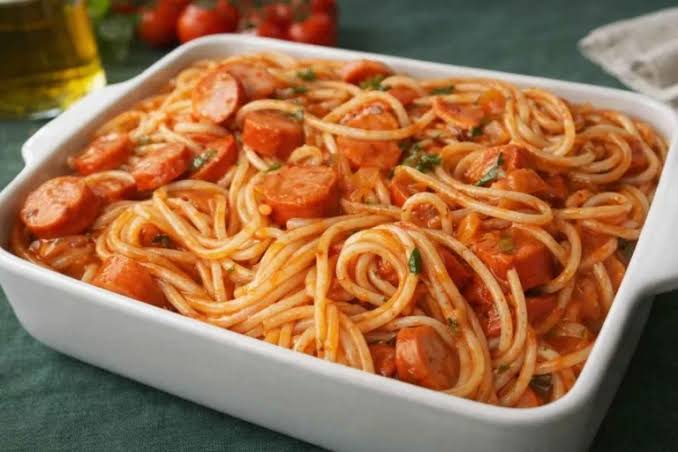
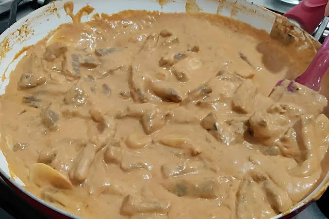
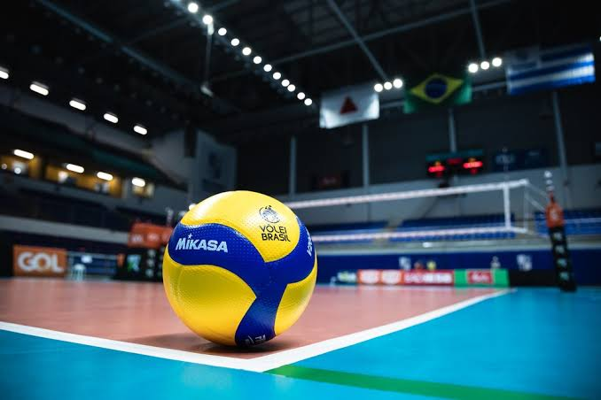
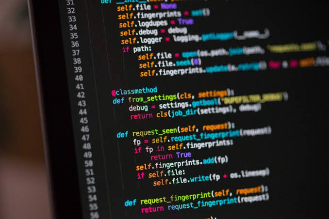
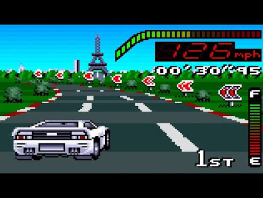

Nesse assunto de comidas favoritas do Renan sempre vem 2 na cabeça no momento em que pensamos na questão.
Comidas favoritas do Renan
A primeira que ver na cabeça quando entra no assunto é claro que que a boa e velha macarronada

Preparada com um toque de amor e sabor, temos a macarronada que quando feita por boas mãos se torna o melhor prato possivel de se imaginar, ainda mais com seus ingredientes separados e escolhidos perfeitamentes.
Logo em seguida temos ele... o estrogonofe, irrecusavel pelo Renan.

Aquele que quando se come da vontade de não parar de comer mais de tão bom que é.
Esportes favoritos do Renan
Começando pelo o qual o Renan diz menos se importar no assunto de time ou quaisquer coisas.
Renan diz que não liga pra time ou outra coisas relacionada ao futebol, mas algo que ele não recusa é um chamado pra jogar bola.
Aquele que o Renan ja gosta mais, só não tem acesso facil a aprender melhores tecnicas ou com quem jogar

Se Renan tivesse com quem jogar ele não passaria um dia sem jogar vôlei.
Passatempos favoritos do Renan
Fazer site é algo que o Renan ama fazer no tempo livre

Se com tempo livre, passa horas desenvolvendo um site.
Mais que obvio é o passa tempo de jogar

Costuma passar bastante tempo jogando, mas por mais que goste sempre acaba fazendo alguma outra coisa.